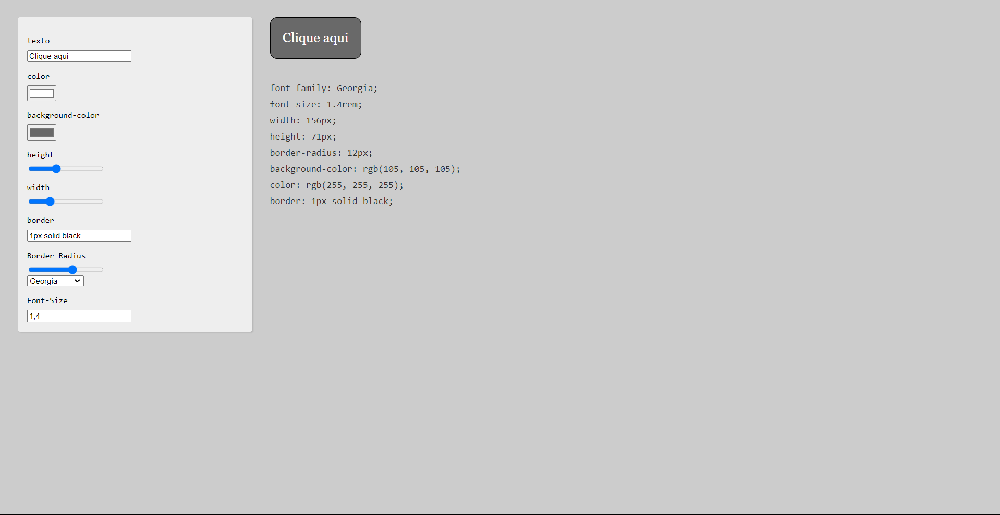
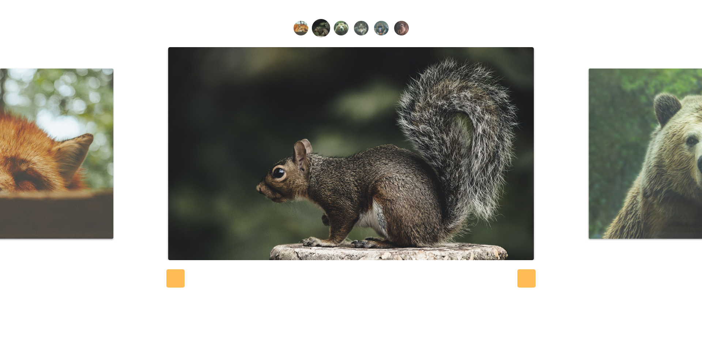
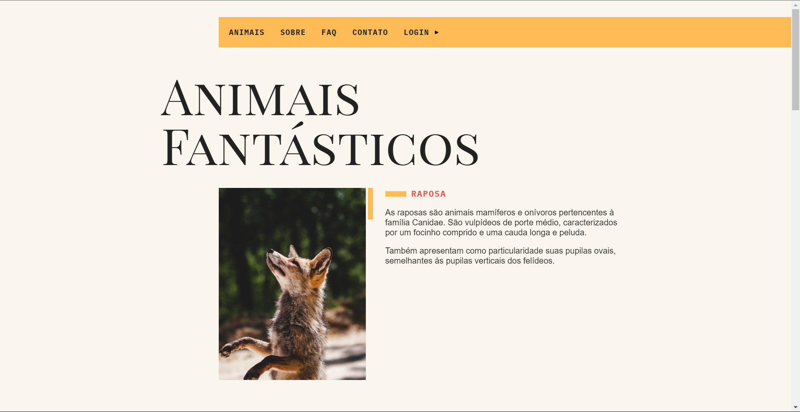
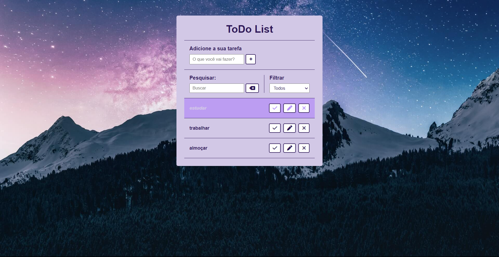
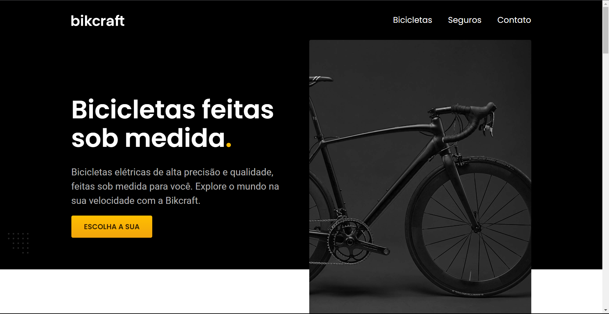

Projetos
- 
- 
- 
- 
- 

Olá! Eu me chamo João Vítor e, atualmente, curso Ciência da Computação. Porém, antes disso, concluí 7 períodos de Direito e, através de um estágio na área, tive o meu primeiro contato com as possibilidades que a tecnologia poderia proprocionar. Desde então, comecei a estudar mais sobre e percebi que era nessa área que eu gostaria de trilhar o meu caminho profissional.
Ciência da Computação - Cursando (3º período)
Curso HTML / CSS - XX horas
Curso JavaScript - XX horas
Curso Python - Em andamento
Curso Banco de dados relacionais - Em andamento
Inglês Avançado
Estágiário (2021 - 2022) - Exerci as funções básicas refentes ao curso de direito no cartório, bem como atendimento ao público e tive meu primeiro contato com softwares voltados para produtividade e armazenamento de dados.
Autônomo (2023 - Atualmente) - Realizo o design e desenvolvimento de filtros, sob demanda, para aplicativos de fotos instântaneas, focado em eventos e datas comemorativas. São utilizadas as plataformas Meta.